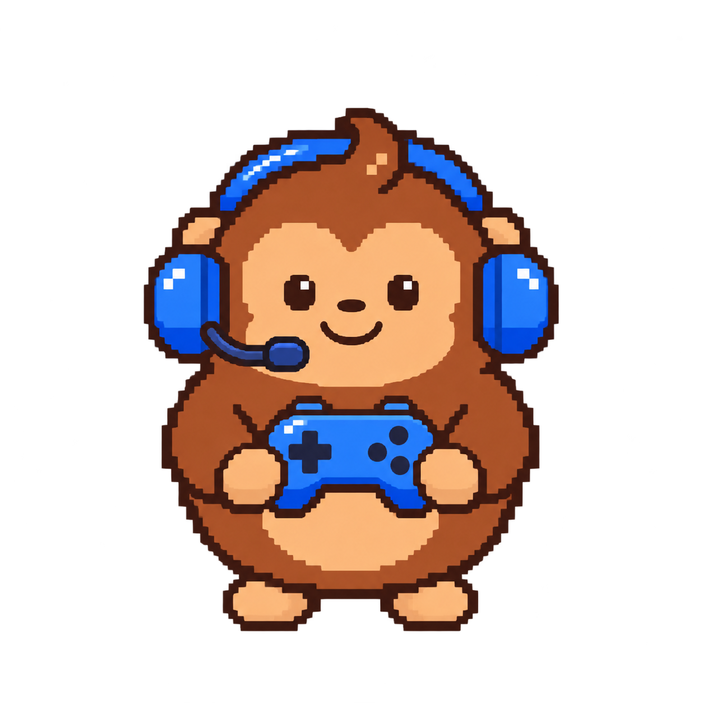

NOW BUILDING
진행률
LIVE작업 신호 정상
DEV STUDIO BROADCAST
만드는 과정을 방송처럼 기록하고 보여 주는 작업 전시관
TODAY'S BROADCAST
BROADCAST HISTORY
RECENT LOG
CHANNELS
CONVERSATION
PUBLIC SHOWROOM
SHOWROOM
완성된 작품과 공개 가능한 작업물을 한곳에서 소개합니다.
WORKS
SELECTED WORK
RECORDING VIEW
DEV STUDIO BROADCAST
실제 녹화·스트리밍 기능 없이, 방송에 담을 개발 현황을 보여 주는 화면입니다.
HOST
안녕하세요! 동해숭이 방송국입니다. 곧 방송을 시작할게요.

PREPARATION TIMER
방송 준비에 걸린 시간을 확인하는 타이머입니다. 실제 녹화나 송출은 하지 않습니다.
TODAY'S SESSION
오늘의 목표
BROADCAST WRAP-UP
RECENT LOG